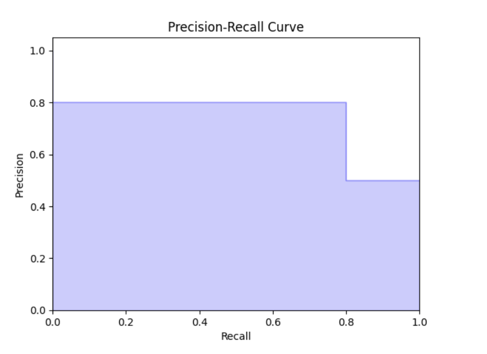

Customer Feedback Analysis System
Enter a review in the box below to see if it's positive or negative.
{% if result is not none %}
Analysis Result:
Sentiment: {{ result }}
{% else %}
No sentiment analysis result available. Please submit a review for analysis.
{% endif %}
Example Reviews:
- "This product was great! It worked exactly as described and exceeded my expectations."
- "I am not happy with this purchase. The product did not perform as advertised and was a waste of money."
- "The customer service was excellent, and the issue was resolved quickly. Highly recommend!"
- "Very disappointed with the service. It took much longer than promised, and the staff was rude."
Confusion Matrix: This visualization reflects the accuracy of the model's sentiment classification, depicting true and false predictions.

Precision-Recall Curve: Displays the trade-off between precision and recall, crucial for evaluating model performance at various thresholds.
Distribution of Ratings: Overview of review rating frequencies. This graph is based on an aggregate of sources, including detailed review data from consumer-focused businesses like Starbucks and various restaurants.
ROC Curve: Illustrates the diagnostic ability of the classifier, helping determine the optimal threshold for maximizing true positive rate while minimizing false positives.